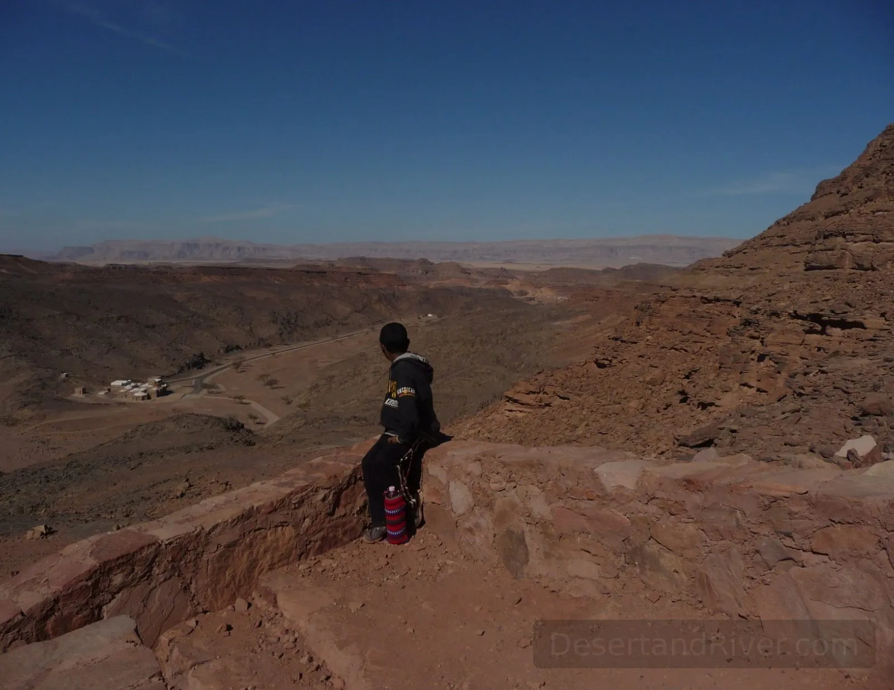

Високо в горах Південного Синаю стоїть храм Хатхор, а за кілька хвилин ходьби — печера, де знайшли перший алфавіт в історії. Більшості компаній потрібно два-три дні, щоб привезти вас до Серабіт-ель-Хадім. Ми робимо це за один довгий день із Дахаба, дорогою заїжджаючи до гробниць Навамис і до нашої Верблюжої скелі. Гіди — Джозеф і Аннет, а шеф-кухар Мері збирає вам обід із собою в гори.

Де почалася наша абетка
Близько 3800 років тому робітники бірюзових копалень Серабіт-ель-Хадім видряпували на скелях короткі написи. Вони взяли єгипетські ієрогліфи й використали їх як літери для звуків. Це протосинайське письмо — предок майже всіх алфавітів світу, від арабського й івриту до грецького й латинки. Написи знайшов Флиндерс Пітрі, а розшифрував англійський єгиптолог Алан Гардінер. У Магарет-ель-Телеха ви стоїте просто перед ними.

Програма дня
- 06:00: зустріч біля вашого готелю в Дахабі або біля The Hub
- Близько 1 години: їдемо до Навамис — круглих кам'яних гробниць віком близько 6000 років, старших за піраміди. Там близько 30 хвилин
- Верблюжа скеля: дорогою до Святої Катерини — велика скеля з набатейськими, коптськими й грецькими написами та зображеннями верблюдів. Мало хто знає про неї
- Близько 3 годин: їдемо до Серабіт-ель-Хадім
- Близько 1 години: з обідом від шеф-кухаря Мері піднімаємося до храму Хатхор, богині кохання й «Володарки бірюзи». Є час оглянути храм і помилуватися краєвидом
- 30 хвилин: ідемо до Магарет-ель-Телеха, печери першого алфавіту
- Близько 1,5 години: спускаємося з гори із зупинкою біля Род-ель-Ейр: зображення жирафи, ієрогліфи, протосинайські літери й «хештег» віком 3000 років, висічений давніми єгиптянами
- Близько 3,5 години: дорога назад. Близько 20:00 — до вашого готелю або до The Hub


Кожна літера, яку ви зараз читаєте, має прабабусю, висічену в скелі Серабіт-ель-Хадім.
Подивіться перед поїздкою
Серабіт-ель-Хадім: бірюзові копальні та храм Хатхор
Перший алфавіт: протосинайське письмо в Серабіт-ель-Хадім
Гробниці Навамис — старші за піраміди
Включено
- Трансфер від вашого готелю в Дахабі або від The Hub і назад
- Індивідуальний джип для вашої групи
- Усі дозволи та збори бедуїнів
- Обід від шеф-кухаря Мері
- Вода
- Ваші гіди Джозеф і Аннет
Не включено: сніданок, чайові та особисті витрати.
Взяти з собою
- Паспорт (на внутрішніх дорогах є блокпости)
- Гарне взуття для походів
- Довгі штани
- Головний убір і захист від сонця
Чи підходить вам ця поїздка?
Для цієї поїздки потрібна гарна фізична форма: близько трьох годин ходьби, з крутим підйомом до храму й довгим спуском, плюс близько семи годин у машині. Якщо вам зручніший повільний темп, запитайте нас про варіант на два дні.
Ціна
$400 за машину, 1–4 особи
Забронювати поїздку
Надішліть нам дату й кількість осіб у WhatsApp. Ми підтвердимо дату й надішлемо захищене посилання для оплати передоплати. Решта сплачується в Дахабі.
Забронювати у WhatsAppВідгуки наших гостей


Скасування
Безкоштовне скасування не пізніше ніж за 3 дні до поїздки. За пізнішого скасування стягується повна вартість.